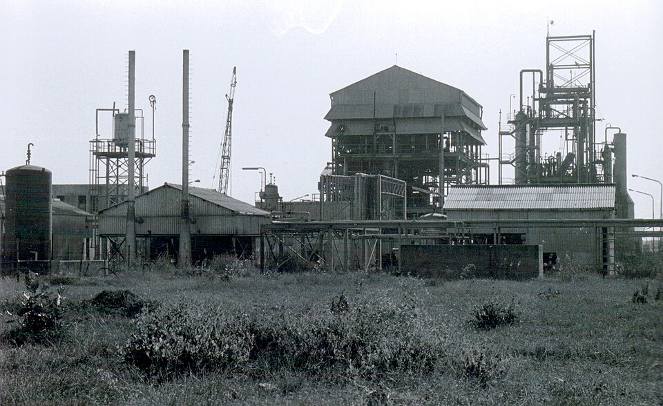

DOSSIER A42-CE-37 // CLIMATE & ENVIRONMENT
Bhopal gas disaster and accountability


The claim
Claim: officials or company intentionally released gas and suppressed it. A deadly MIC leak and safety failures are documented; intent requires distinct proof. This file tests the narrow allegation rather than treating secrecy, coincidence, or public controversy as evidence by themselves.
Chronology
Gas escaped at the Bhopal plant on 2–3 December 1984; response, compensation, and health studies continued for decades. Chronology helps separate contemporaneous knowledge from later interpretation; sequence alone cannot establish a causal relationship.
Primary record and data
Plant, court, commission, and medical records document the leak and deficiencies; death and exposure estimates differ. Original records establish what was measured or decided, while independent work is needed to test methods and institutional conclusions.
Independent scientific evidence
Water entered an MIC tank and triggered runaway reaction; maintenance, containment, warning, and wind shaped harm. Convergent observations and a plausible mechanism carry more weight than a single image, anecdote, or disputed quotation.
Alternative explanations
Long-term dose records are incomplete; company, government, and community sources have differing limits. A strong alternative must explain the observations and remain open to disconfirmation; ordinary causes deserve the same scrutiny as extraordinary ones.
Limitations and uncertainty
Historical exposure and health records are incomplete and uneven; causal attribution, corporate knowledge, and intent are separate questions requiring separate evidence. Uncertainty is stated explicitly rather than treated as support for the strongest version of a claim.
Calibrated verdict
Industrial negligence and disaster are established; deliberate release or wider plot is not shown. Documented research, emissions, negligence, or secrecy should not be conflated with a broader unsupported coordinated plot.
Testable evidence requirements
Review plant logs, maintenance, toxicology, wind, and medical data to link decisions and exposure before asserting intent. A persuasive claim specifies what new evidence would change the assessment and allows independent replication, including negative results.
Sources and source limits
- Broughton, Bhopal Aftermath, Environmental HealthPeer-reviewed history and health review.
- Supreme Court of India RecordsCourt files establish legal history, not all scientific causation.
- WHO, Chemical SafetyToxic exposure guidance, not a site-specific dose reconstruction.